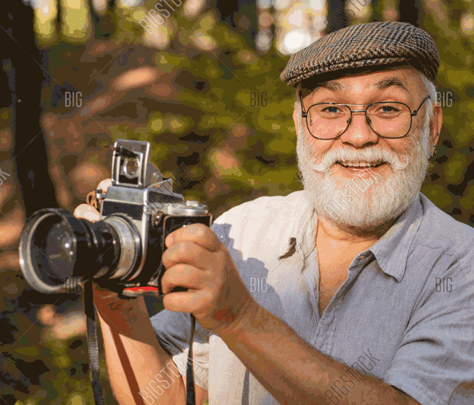

| Hello my name is Dr. Jesper Jasper, BWP, and I have made this website for one purpose and one purpose alone. To share to the world one of mother nature's most hidden rituals.
Bear marriage. Bear marriage or as we like to call it in the bizz beariage, is a sacred and beautiful ritual. If you've never seen a beariage before I can't say I blame you. They always send the save-the-dates a little too late to clear your schedule. |
 |
That was a joke. I am very sorry for lying and i understand that as a nature photographer I believe that it is my duty to record mother nature with accuracy and dignity. The unfortunate truth is that most bears are ideologically opposed to supporting the United States postal system.
Here are a few of my favorite bear pic's that I have taken over the years. I hope that now you too will understand...